Два уровня материалов. Практика для стоматологов-гигиенистов: техника, протоколы, свойства материалов — такие статьи помечены значком «для специалистов». И разборы процедур для пациентов, которые можно давать на приёме.

OHI-S, API, индекс кровоточивости: что каждый из них меряет, какой выбрать под задачу и как превратить цифру в аргумент, который пациент понимает.

Белые пятна вокруг брекета — главный риск ортодонтического лечения. Разбираем зоны, протокол приёма, допустимый инструмент и то, что нельзя трогать абразивом.

Почему пациент звонит на следующий день, что происходит в дентинных канальцах и какие решения работают — от выбора фракции до финишного покрытия.

Три параметра, которые определяют результат сильнее, чем марка аппарата. Углы по зонам, рабочая дистанция, время в точке и система обхода зубного ряда.
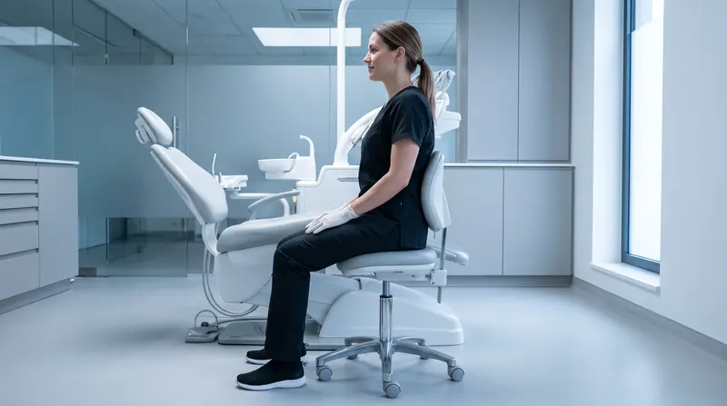
Шея, поясница, кисть и зрение — четыре ресурса, которые расходуются быстрее всего. Разбираем посадку, положение пациента, хват инструмента и микропаузы.
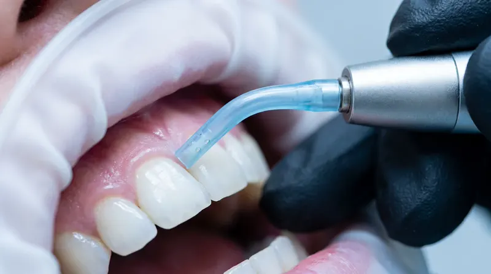
Чем поддесневая порошковая обработка отличается от SRP, где она уместна, какие требования к материалу и насадке и почему эмфизема — не теоретический риск.
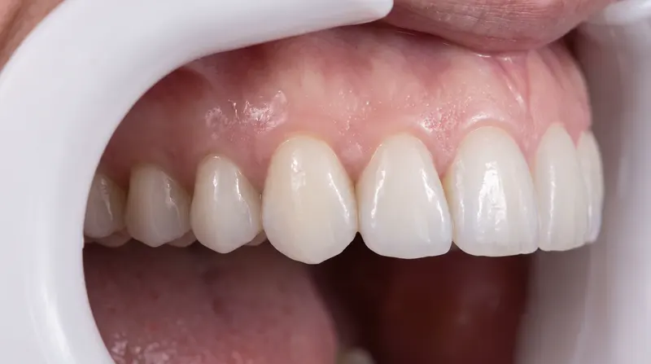
Почему стальная кюрета и содовый порошок вокруг титана недопустимы, чем отличается мукозит от периимплантита и как выстроить поддерживающий протокол.
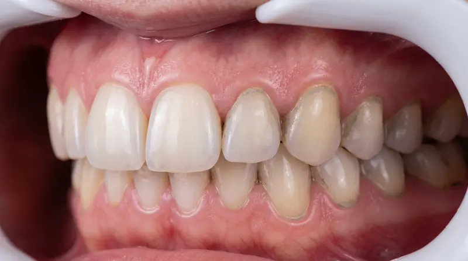
Размер частицы — только один из пяти факторов. Твёрдость по Моосу, форма зерна, распределение фракции и параметры потока: что реально сравнивать при выборе.
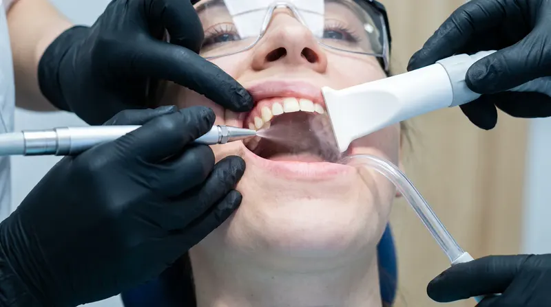
Скалер и пескоструйный наконечник — главные источники аэрозоля в клинике. Что реально снижает нагрузку: эвакуация, преполоскание, положение ассистента, СИЗ и проветривание.
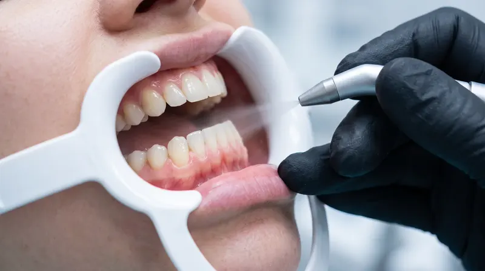
Что происходит на самом деле, когда струю задерживают в точке, направляют в борозду или работают крупной фракцией по оголённой шейке — и как делать правильно.
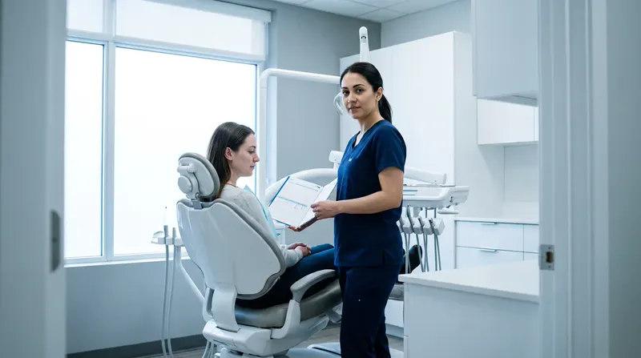
Почему «раз в полгода всем» одновременно теряет деньги и качество. Как оценить риск, разнести пациентов по группам и превратить гигиену в предсказуемый поток.

Метод воздушно-абразивной обработки: как устроен, что чувствует пациент, чем отличается от ультразвука и в каких случаях применяется.
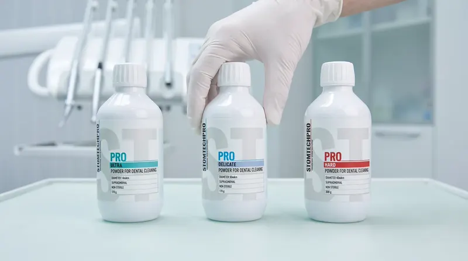
Чем отличаются основы порошков по абразивности, форме частиц и задачам. Когда мягкая фракция обязательна, а когда сода работает быстрее.
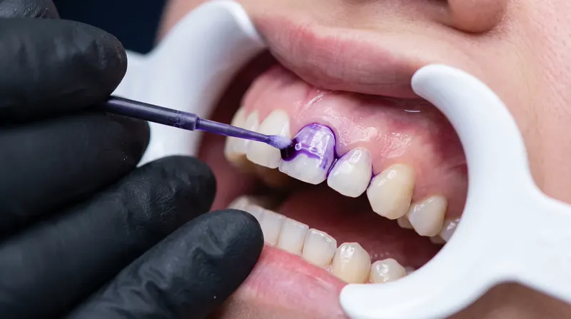
Современный порядок гигиенического приёма по шагам: диагностика, окрашивание биоплёнки, мотивация, порошковая обработка, ультразвук точечно и контроль результата.

Как биоплёнка образуется за сутки, чем мягкий налёт отличается от пигментированного и камня, и какими инструментами убирают каждый тип.
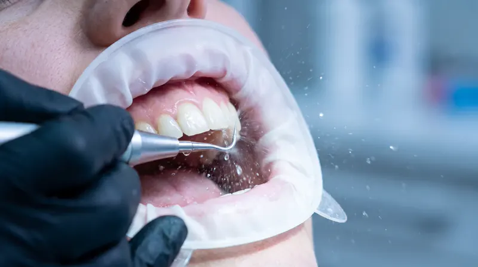
Наддесневой и поддесневой камень, чем их снимают, почему ультразвук и воздушно-абразивную обработку не противопоставляют и что бывает, если тянуть.

«Стирает эмаль», «делает зубы чувствительными», «это то же самое, что отбеливание». Разбираем, что здесь правда, а что — устаревшие представления.

Почему «раз в полгода» — не универсальный ответ, от чего зависит интервал и какие группы пациентов нуждаются в визитах каждые три месяца.
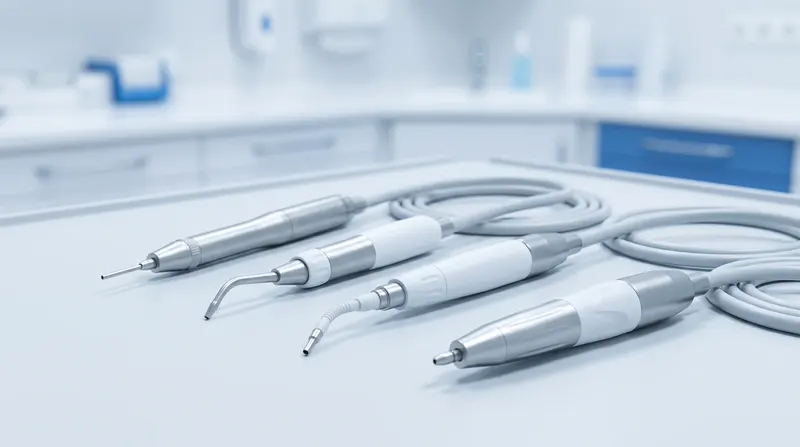
Почему производители пишут «только фирменный порошок», что на самом деле определяет совместимость и как не забить каналы наконечника.
Порошки STOMTECH PRO — производство полного цикла в Курске. Закажите напрямую: подберём фракции под задачи вашего приёма.